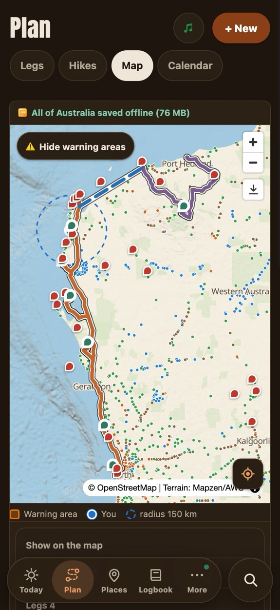
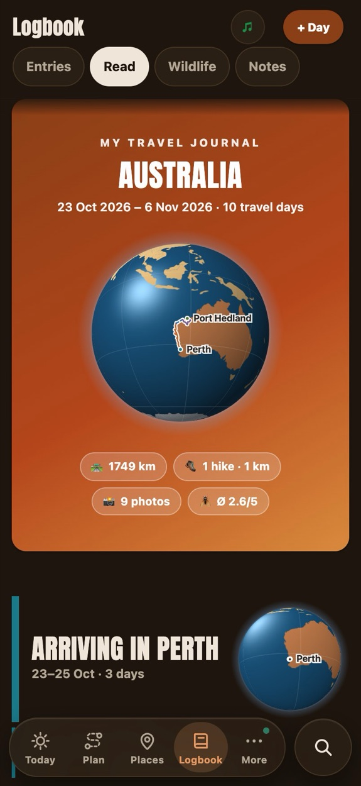
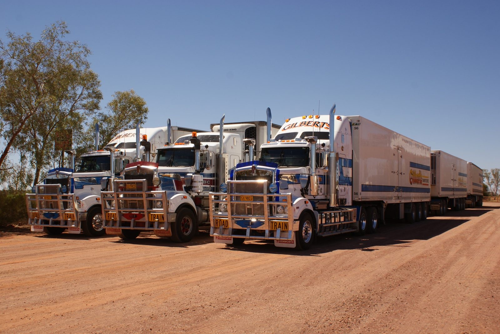
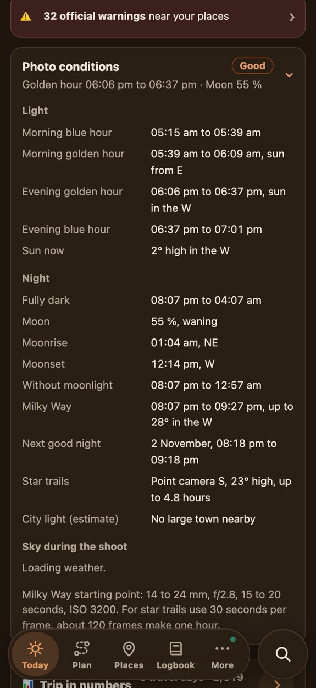
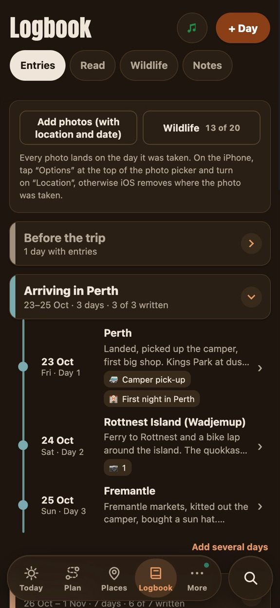
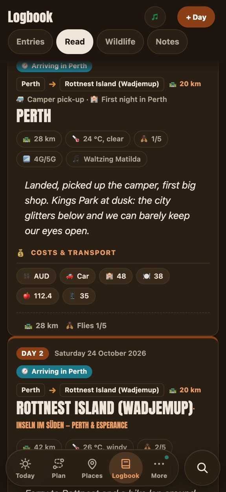
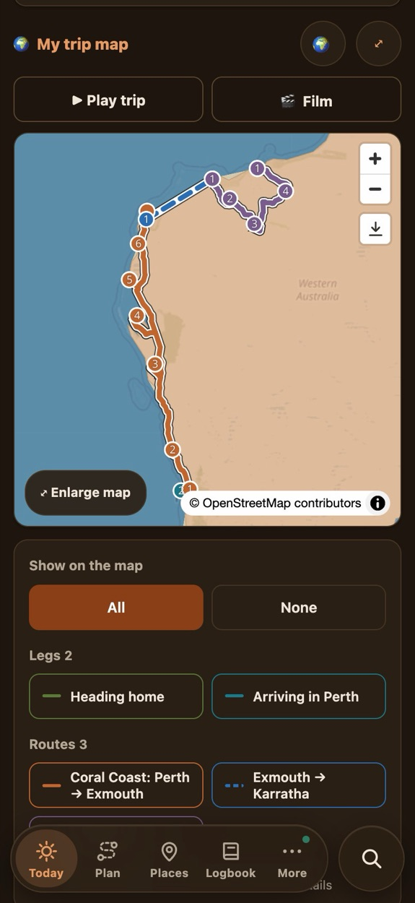
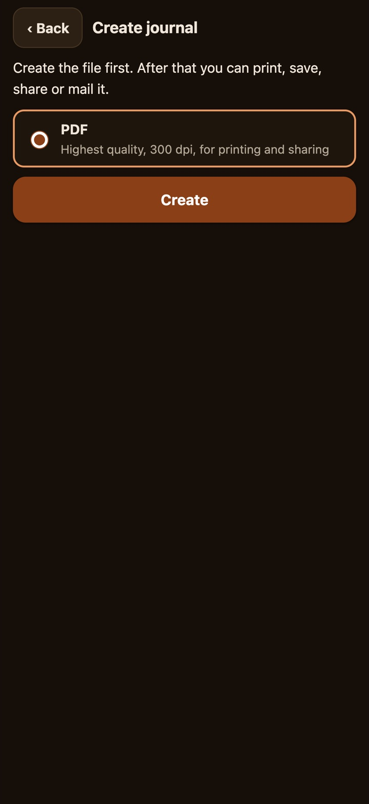
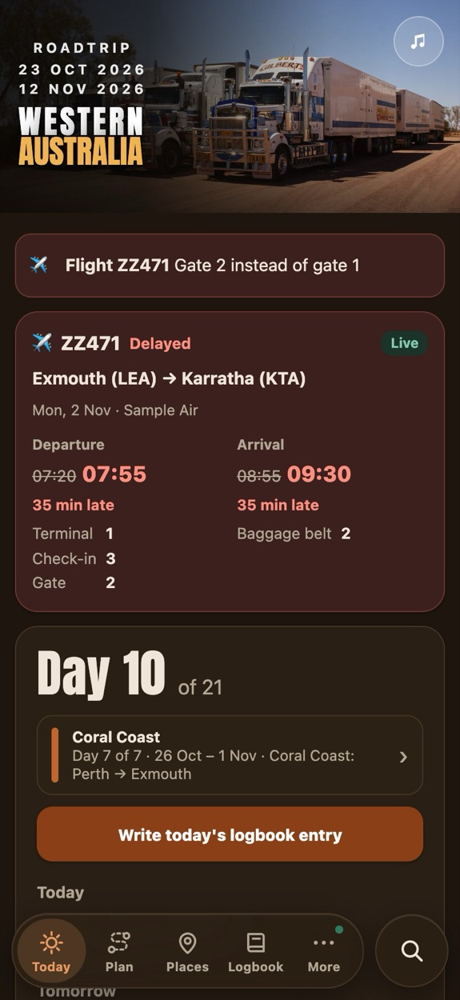

The map is already on your phone
All of Australia in 76 MB, or every gravel track in WA in the large map.
A free road trip app that keeps working where the signal stops.


All of Australia in 76 MB, or every gravel track in WA in the large map.
Every route lists its fuel and water gaps before you go.
Test trip, Karratha to Port Hedland.The latest time to leave, so you’re not dodging roos at dusk.
Your location to read out, the nearest help and 000, with no signal at all.
No substitute for a satellite messenger or EPIRB.Over 10,000 servos, water points, toilets and camps across WA, saved on your phone.
Plus rest areas, shops, mechanics and clinics.A wildlife album with 20 animals, a roadkill counter and a fly factor for every day.

For every stop on your trip, worked out offline.

Jot down the day. TravelBuddy makes the journal, photo book and route film.




Gate, delays, baggage belt. Flights need a free AeroDataBox key.
Paste the confirmation and the form fills itself.
Fire, flood and storm in WA, VIC and QLD, with the distance ahead.
Face ID, Touch ID or a PIN, encrypted on the device.
23 categories at the day’s rate.
Local bands from every town in your Spotify playlist. Needs Premium.
We won’t say where.
Yes. Open it in Chrome and tap Install. On iPhone it’s Safari, Share, Add to Home Screen.
Save the map once on Wi‑Fi. Then the map, your route, fuel, water and emergency info work with zero bars. Weather, warnings and flights update when you have signal again.
Yes. No account, no ads, no subscription, no personal data collected. The code is public domain.
Nowhere. It stays on your device. To move it to a second phone or laptop, send yourself a backup file, for example by AirDrop.
No. It shows your route and your blue dot on the offline map, and opens Google Maps when you want directions.
It’s built for WA. The map covers all of Australia, the fuel and water points cover WA plus Melbourne, Cairns and the Whitsundays.
For more information, visit TravelBuddy on GitHub. It’s all free to read.
Made by Kotdesigner on GitHub.
Every reel from @travelbuddy.oz, newest first. Tap one to play it here.